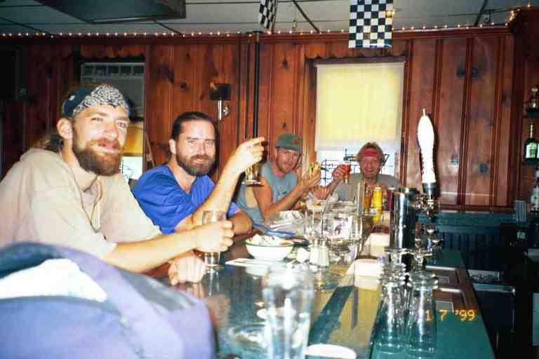

When we woke up in our bunks at 501 shelter on June 30, the slackpackers had already left. We got on the trail and headed for Eagle's Nest shelter about 14 miles away. It was not quite as hot this day. We came to a number of damp spots where we had to walk on the grass or on edge of woods at side of trail and we also came to a number of relocations that put the trail back at its original location in the 1930's. We spent most of the day leapfrogging with GRIZZLY and NOMOSS.
Eagle's Nest shelter is located about 0.3 miles west of the trail. Just beyond the shelter is a shady area under the trees with lots of sites for camping. We set up our tent here with a few other hikers. NOMOSS, GRIZZLY, SENDORA and SCHLEP stayed in the shelter. LAST EXIT, CABOOSE and PALE RIDER stopped by to make supper before going on to camp a little further on. I talked with NOMOSS who seemed a little pensive. He had received some bad news. NOMOSS worked on communication towers (cell phones towers mostly). He got this job a few years ago when he was down and out and having problems. He had become good friends with the man who had taken a chance and given him the job. This man had now fallen to his death from a tower. He was going to call his friend's wife from Port Clinton.
The next day was a 9 mile hike to Port Clinton. The descent was very steep, with lots of switchbacks but the descents still seemed almost vertical in spots and we were glad to have our hiking poles. We ended up in a work yard of some kind; seemed railroad related, but this was a mining area at one time, so we were not sure. We crossed railroad tracks and went along a street which eventually crossed a stream.
An older gentleman came up to us and told us that a local church had a pavilion in town that hikers could sleep in. He guided us down a residential street which lead to the pavilion. As we went slowly along at his pace, we asked about the post office and the Port Clinton Hotel. He pointed up two of the side streets to the next parallel street, where businesses were located. When we knew where the hotel was, we thanked him and headed up to the hotel. It was located on the main street which was a highway at the base of a mountain, that is, one side of the street had buildings and the other was a mountain. Traffic whizzed by at high speed.
We left our packs on the porch out front and went inside the old building. We headed to the dining room, but were confronted by a sign advising that hikers should bathe before using the dining room. Showers were $5 and rooms on the non air-conditioned second floor were $50. Hikers were accepted in the air conditioned bar so we went and sat at the bar and ordered hamburgers. They were huge and came with a large helping of fries. Other hikers in the bar were LAST EXIT, BRISTLECONE, GRIZZLY and NOMOSS. left to right.

There was some sad news here. BRISTLECONE told us he was leaving the trail. He made the decision a few days before. He had started hiking out of Port Clinton a few days before and suddenly decided he was tired of it, and turned around. He had been staying at the hotel since then and was going to leave soon for his home in Las Vegas. He had been giving out business cards to hikers and invited everyone to his place for a Y2K party on New Year's Eve. His leaving was not entirely a surprise as his 54 mile one day hike in the Shenandoahs was likely a sign of boredom.
I think this was our last meeting with LAST EXIT. I talked to him for a while and learned that he was working on his PhD in environmental studies, the politics of air pollution and global warming. A very interesting discussion. This is another example that there are all kinds of people on the trail and that you often cannot tell the background of your fellow hikers. The trail names and attire really hides everyone. We received an email from LAST EXIT this spring in which he said he inched closer to his PhD and had worn a shirt and tie a few times to earn money. In 2000 he hiked the entire 2600 mile Pacific Crest Trail (PCT) from Mexico to Canada. (A number of other hikers from 1999 were on the PCT in 2000, including PT who did a portion before being called back by the reserve, and SEMPER FI DREW who completed it.)
We went outside with LAST EXIT who wanted to get rid of some of the food he received in his maildrop. (Restaurant stops can tend to screw up your food plans and leave you with too much supplies.) There were no stores in town and it was difficult to get a ride, so we would be picking up the food box that I had mailed to this town from Duncannon. Some of the extra items from LAST EXIT would also prove to be helpful however. We took a few items from him including some small bags of powdered milk.
I was still having problems with my feet and so I called a couple of outfitters in nearby towns for boot inserts and heel cups. The phone was a new fangdangled one and cost me a fortune for the local calls. The outfitters did not have anything that would help but one suggested that pieces of cardboard inserted under the insole could be helpful.
We walked to the pavilion which was nearly 0.5 miles down a residential street. It is a standard picnic pavilion. It was a large, covered, open building with a three foot wall along the edge. There were a few picnic tables inside and we could sleep on the wooden floor. There was an above ground pool at the home next to the pavilion and a note nailed to the pavilion warned that the pavilion would be closed if there was a repeat of an occurrence from a few years before when some hikers used the pool. The toilet facility was an outhouse in a grassy area across the street. Water was available from a spigot at the hotel. I left MA with the bags and went to fetch our parcel at the Post Office back in town.
When I returned, MA sorted the packages and I cut out pieces of cardboard and inserted them in my boots. I was amazed at the difference it made. TOEJAM and STRAWBERRY laughed as I did a combination jig and tap dance.
The motto of many thru hikers was: "Don't sweat the small stuff". In other words, don't worry, things will work out. You will get a ride, or someone will loan you something you need, or will share food or medication, etc. I am a worrier but the trail taught me to embrace this motto. Port Clinton is a good example of the motto at work. We did not have maildrops, but decided to mail stuff to Port Clinton on someone's advice. It turns out however that we should not have bothered.
A Trans Am pulled up in front of the pavilion and two young girls got out and walked up the path. They asked if we needed anything and volunteered to drive us to the nearby town of Hamburg. Three of us went with them: me, TOEJAM and GRIZZLY. The girls were from North Carolina and were visiting family in the area. The boyfriend of one of them had done part of the trail and suggested that she do some trail magic while in Pennsylvania.
We did not need groceries but I got some inserts for my boots at a pharmacy, and bought a half gallon of ice cream. The others bought supplies and also got ice cream. When they brought us back to the pavilion, the girls announced that they would show up with breakfast the next morning for all of us including the new arrival, SMOKY JACK (not to be confused with our friend SMOKEY JOE). We said we would be up early and they said it was not a problem. This would be better than our planned breakfast at the 3C's restaurant, more than half a mile further down the street. We then all ate our ice cream (attached picture of NOMOSS, GRIZZLY, PA, TOEJAM, and HAIRY STRAWBERRY). Some time later, we were joined by RAW WITS. Nobody could figure how this dull slow talking young man got his name.
The next morning at 6:15, the girls were back with breakfast. They dropped it off and would not stay. We thanked them profusely. They had brought two 2-quart containers of orange juice, a dozen Dunkin Donuts, 8 McDonald breakfast biscuits (egg and sausage), hash browns and coffee. It was a great treat. Some got up to have breakfast and then went back to sleep. SMOKY JACK was not there, having walked up to the 3C's for breakfast around 5 a.m.
*************
TOEJAM and HAIRY STRAWBERRY (Elizabeth and Jesse)
A few words about these two whom we had first met on May 13 at Woodshole, the day of the thunderstorm. TOEJAM had first tried the trail in 1994 and had abandoned at Port Clinton when someone was stalking her. So she was now at that same point on the trail with her boyfriend and their dog ZEUS. I may already have mentioned that she was 31 years old and he was 24. They would be picked up this morning, for a few days break, by TOEJAM's aunt and uncle who wanted to take them camping. They were not too thrilled with the idea (to put it mildly) and had been looking forward to sleeping in a bed.
We thought they would eventually catch up to us sometime during the summer, but it never happened, and we wondered the rest of the summer if they had abandoned the trail in the same spot as last time. In mid August, we were surprised to meet them at a shelter in New Hampshire. Rather than get back on the trail at Port Clinton, they had gone up to Maine and started hiking south to avoid the heat. Their plan was to get to Port Clinton and then go back to Maine to finish and to summit. We have now found out that TOEJAM got injured and STRAWBERRY went on alone. However, he did not summit because he does not want to climb Katahdin without TOEJAM. We received an email this spring, announcing their engagement.
*******************
The following is from SINGLEMALT's journal: http://users.erols.com/johndsc/welcome.htm
***The crowd at the Port Clinton Hotel bar is very friendly, and one guy down on the end, who has been silent, finally speaks up and says, "If you find me on the trail, I'm f---ing lost." Pennsylvania, especially northern Pennsylvania, is funny. If you meet someone face to face, such as in the Port Clinton Hotel, the're as friendly and helpful a person as you could ever ask for. On the other hand, if you're out on the road, not only is it difficult to get a ride, but there have been some instances of drivers actually swerving off the road and onto the shoulder to brush a hiker back. One of the locals at the bar told me "People around here hate everyone, even themselves." Go figure.***
*******************
It was a rocky climb out of Port Clinton Gap that morning and we passed through the watershed area for the town of Hamburg. We had lunch at Windsor Furnace shelter situated in what seemed to be a day use area associated with the Hamburg reservoir which was somewhere nearby. As we ate, a group of dayhikers went by, heading off to do a loop trail which would lead them to meet us later in the day. MA decided to go to the toilet in the woods as the smell in the privy made her nauseous. I went through the woods and filtered water from a stream.
The trail continued climbing over rocky terrain, with sharp rocks sticking out of the ground on the trail, and occasional areas of rocks and boulders that we had to navigate over. We came to Pulpit Rock where we sat and had lunch on the rock overlooking a farming valley which is apparently Amish country. As we looked across the valley, we saw rocky cliffs jutting out from the edge of the mountain. We wondered if it could be a place called The Pinnacle which the Companion showed as 2 miles further on. The cliffs did not seem that far away. It turns out that it was The Pinnacle and that it was 2 miles away on foot as the trail stayed on top of the rocky ridge and contoured the valley before getting to it.
When we got to The Pinnacle, the trail made practically a 180 degree turn as it headed around to follow the ridge on the other side of the mountain. We removed our bags and grabbed our snack bags and wandered over towards the cliffs. We sat on the edge and admired large birds (buzzards) soaring below us, not moving their wings as they let the thermals bring them higher and higher. I moved over and glanced in a crack in the rocks and saw two copperheads. We examined them and then sat far from that area. Copperheads are very small venomous snakes, no more than 3 feet long. They do not have rattles and are more poisonous than rattlers. Their colouring resembles dead leaves which is where they often hide and there is always a danger of stepping on one. They are not found north of Pennsylvania as they have been unable to cross the Delaware river. PADDLER claims to also have seen a blacksnake in the crack with the copperheads.
We then walked along the ridgeline on a wide cart track, with rocks sticking out here and there. We came face to face with the day hikers and then met a young couple with a baby who had set up their tent in the woods next to the trail. After 3.5 miles, the track split and we took the trail to the right, which immediately started descending. A short time later we heard the loud sound of a motor somewhere above us. Eventually, an ATV came into sight coming down the trail at high speed. He came to a sliding stop when he saw us, turned around and went speeding back up the hill, spraying rocks and dirt as his tires dug into the loose gravel.
The trail came out of the woods on Hawk Mountain road and we headed east 0.2 miles to the Eckville Shelter, where we would spend the night after this 15 mile day. During the day we passed the 1200 mile mark of our trip. This shelter would normally be called a hostel and in fact was nicer than some hostels. It is a small enclosed building situated right behind a house in which the caretaker resides. The shelter is roughly the size of a small garage with 4 bunks on one side wall and 2 bunks and a table on the other wall.
On the back porch of the house is a fridge with pop and in the freezer there were ice cream sandwiches. A suggested donation of $0.50 was requested for each. The shelter and house belong to the Blue Mountain Eagle Climbing Club which maintains this section. A short distance from the shelter was the wash house and toilet (yippee it flushes). The shower was solar heated, with two large black plastic drums suspended next to the building.
The caretaker was a former hiker named LAZY. He watched everyone like a hawk, making sure no one broke any of the rules. He almost jumped all over MA when he thought she was going to throw her dishwater too close to the house. He had recently changed the carpet that lined each of the bunks. Apparently the place had been infested with fleas from someone's dog (we speculated that it might have been RICO's dog SIMBA).
We got the two last bunks. The other four belonged to the two section hiking girls, SCHLEP (on left) and SENDORA (on right), and to PADDLER and his son SPOTTED BEAR. We had started the trail the day before PADDLER and had met him only once before when PILGRIM introduced us in Waynesboro Va. His son was thirteen years old and had just joined him to hike for about a month. We would be hiking on and off with PADDLER until our last day on the trail. His trail related website is http://trailstories.com/ and his journal is at http://paddler99.trailstories.com/journal/
A number of hikers showed up, had showers and made supper and then continued on, including SPLINTER who had a long conversation with MA while he sat at the picnic table making supper. LAZY mentioned that there had been many reports of a man hiking naked in the area and people had even called him to do something about it. He said it would be pointless to be patrolling the woods looking for a naked man and what would he do if he found him. SENDORA said that her mother had once run into him and had simply looked him in the eyes and had a nice conversation.
The next day was Saturday July 3 and we knew there was a treat waiting for us around lunch time. The next section of trail included a part of the 11 mile stretch maintained by the Allentown Hiking Club. SENDORA's parents belonged to that club and she said that there would be an Independence Day BBQ for hikers at the Allentown Hiking Club Shelter. The morning started with a steep climb of over 1000 feet over a distance of 1 mile and then levelled off and we crossed a little field of rocks and then we headed down a wide grassy road with rocks sticking out. It was difficult to avoid stepping on the rocks and my feet were still suffering.
Around noon we spotted a truck in the middle of the wide trail and the shelter off to the right. It was a beautiful new shelter with club members sitting on the steps leading up to it. We were offered hamburgers and hot dogs with all the trimmings. There were veggie trays and salads and containers full of cookies. Best of all, there was a cooler with 4 different containers of ice cream, which was getting a little soft in this heat, but it was delicious. We stayed over an hour and ate a ton and then took some cookies with us.
The club members were very nice and we met SENDORA's parents. They all joked about the Pennsylvania rocks and said that they go out at night and sharpen them. It was a joke but it certainly rang true. Walking over fields of rocks and boulders was slow and frustrating, but the worst walking was in sections with a footpath with rocks sticking out. You literally could not take a step without your foot touching a rock. This meant that your feet could not be placed down flat thus twisting the feet and aggravating foot problems such as mine. To make matters worse, there was usually only a sharp point or sharp edge sticking out, which caused major problems to boots. Some of these sections lasted for miles. We did not find the rocks as bad as we had been lead to believe, but it definitely was no fun.
Late in the day we crossed PA 309 and found a bag with apples and cans of pop as we went back into the woods. (Someone later told us that when they came to this same spot there were no apples and most of the cans had been punctured by teeth. Bears were suspected.) A couple of miles later we came to the 0.3 mile side trail leading down the mountain to New Tripoli campsite. It had been a hot 14.5 mile day, so we went down and camped with PADDLER and SPOTTED BEAR. It was a beautiful camping spot next to a stream, which was unusual in this dry hot section of trail. PADDLER showed me his innovative Nomad tent. It is a very light one man tent which is kept up with hiking poles, which makes for a big saving in weight. Only one pole comes with the tent and it is only one foot long.
The next day was another hot day over rocky terrain. The difference was that we were often out in the open exposed to the sun as we walked along the ridgeline. Some of the places on the trail that day were The Cliffs, Knife's Edge, Bear Rocks, and Bake Oven Knob. The temperature was in the high 90's with high humidity. Knife's Edge was particularly difficult as we clutched boulders and inched ourselves along a narrow rocky ridge, with our heavy packs on our pack. MA was extremely pleased to conquer this area that she had been dreading. Attached is MA's picture just past Knife's Edge. She is standing on the trail which continues on the rocks into the woods behind her.
We arrived at George W. Outerbridge shelter and set our stuff up inside with two section hikers. It was stifling hot inside even though it was away from the sun, but we did not want to sleep in our tent as there did not seem to be any good spots in this rock strewn territory. We could have kept on going 0.7 miles down to the highway and tried to stay in the jail in the basement of the police station, but it was Sunday, the fourth of July and we did not know if there would be many people about. PADDLER and SPOTTED BEAR managed to stay in the jail that night.
As we sat talking in the shelter, we were surprised by an old familiar face, coming around the corner. It was PACE whom we had met at Rainbow Springs Campground during the snow storm and had last seen two days later on March 28. (His journal is at http://trailplace.com/c99journals/315gamble/315gamble_index.html). Soon after, another hiker we had not seen for a few months arrived: BEARPAW. A few others arrived including GRIZZLY and SMOKY JACK.
The floor on this shelter was high off the ground. The side walls extended a few feet beyond where the floor ended and a three foot high wall with an opening in the middle ran across the front of the shelter. This allowed people to stand on the ground in the shelter and use this low wall as a cooking surface. This is what I did while PACE stood on the outside doing the same thing. He updated us on his hike and said he had been off the trail for 16 days. He was still making essentially the same meals he was making before: ramen noodles and Lipton pasta mixes combined in the same pot.
Everyone was talking about what they would be doing the next day. Temperatures of over 100 degrees were expected and we had a tough climb up from Lehigh Gap and a 16 mile walk without water sources. Many of those miles would be along the exposed top of Blue Mountain which is mostly devoid of vegetation as a result of 82 years of zinc mining in the area. PACE announced that he would rest and would be leaving around 9 p.m. to hike that area at night when it would be a little cooler. GRIZZLY said he would go with him.
Meanwhile I went down the trail to where a spring coming out of the side of the mountain formed a large pool at the edge of the trail. I wanted to try to wash up a little, as I was so sweaty and dirty. It was difficult to get clean in these spots as we did not want to wash in the same water that we would be using to drink. SMOKY JACK had a great technique. He had a small pop bottle that he used for cleaning purposes. He would dip it in the pool and then pour it on himself or wet his facecloth with it. This avoided dipping his dirty facecloth into the pool. This could only be done with a separate bottle since you would not want unfiltered water in your drinking bottle. Later I walked down one of the rocky side trails to find a toilet spot as there was no privy here. There was no place to dig, so I did like everyone else. I went into the woods, moved a big rock, did my business in the hole and replaced the rock.
Around 9 p.m. GRIZZLY and PACE left. They did not expect too much trouble. It was going to be another clear night and they had both checked their flashlights. MA and I decided to get up around 5 a.m. and try to climb up Lehigh Gap before it got too hot. We went to bed and listened to the fourth of July fireworks in the distance. It was not a very restful night because of the heat.
When we woke up we were both drenched and MA's hair had not dried from yesterday's hike. When we left, we each carried our regular 2 litres of water in our waterbags but I carried an additional 6 litres of water (weight 12 pounds) in my dromedary bag. I usually only used the dromedary after stopping for the day, to carry water from water sources to the shelter for our meals. We were soon off the mountain down to the road and crossed the Lehigh River bridge.
We were in a wide river valley with mountains on all sides. A highway across the bridge whisked traffic along the base of the devastated mountains we had heard about. There was no vegetation along the side of the mountains and we wondered which way we would be climbing. We followed the blazes across the highway into a parking lot at the base of the mountain. It was now 6 a.m. as we started climbing a rocky trail that switched back and forth as it wound its way up the steep mountain. The climb was slow and strenuous in the early morning heat. When we approached the top, we looked back down to the parking area and saw PADDLER and SPOTTED BEAR and a few other people getting out of a car and heading for the mountain with light packs. They had obviously managed to find someone to slackpack them over this tough area.
The trail climbed to the left of the hill in an area of large jagged boulders and rocks. At the top far left corner, we were required to do a little mountain climbing to get up to the next level. There were very few places to place our feet as we used our hands to pull ourselves up a ten foot high section of sharp edged boulders. We accomplished it without removing our packs and had to watch our balance as we went over the final boulders to get us over the final ledge. MA lead the way and I had to give her a boost in a few places where the next hand hold was just beyond her reach.
Once up on the next level, the trail continued over the field of rocks and boulders around the end of the mountain and up a more gradual slope on the other side. The trail here was over rocks with no soil or vegetation but was relatively easy to follow. The maintaining club had moved some of the rocks aside to make a recognisable path over this rocky territory and there were white blazes in strategic spots. We were soon passed by PADDLER, SPOTTED BEAR, SENDORA, SCHLEP and SENDORA's mother. PADDLER had called them when in town and had arranged the slackpack by SENDORA's father. He would be meeting them with water and supplies at some of the crossroads. Unfortunately PADDLER could not notify us of the opportunity. They were soon out of sight.
We continued for some time up the rocky slope and the trail finally levelled off at the top of the mountain. The terrain would stay relatively flat and in a straight line for the entire day. It was very barren at first with grasses and small bushes growing here and there over the dry rocky soil. Eventually the trail became an 8 foot wide track in an area with higher scrub bushes. When we found some shade, we stopped for a break. Luckily we were watching the blazes as we walked along the wide path, because all of a sudden there was a double blaze indicating a turn. Sure enough the trail turned off the wide track, onto a narrow foot path through the woods. Around 9:30 a.m., the trail dipped slightly and we met two section hikers waiting for a ride at the road at Little Gap. They had come from the other direction and said there was no water source near the trail until the next shelter, another 11 miles away. They said there were jugs of water on the trail right across the road.
We crossed the road and took a break with BEARPAW where a ridgerunner had left a number of gallon jugs of water. A note indicated that he would try to bring more water later. We only filled our two little bottles and left the rest as I was carrying enough water for our needs. The trail continued in an area of open woods and then entered an area of rocks and boulders and then climbed a little up through this exposed area of round boulders and short vegetation. We then walked for a few hours through light woods with the hot sun filtering once in a while through the trees. The heat was oppressive and tiring. Just past noon we found BEARPAW laying in the woods off the trail taking a break with his head up against his pack. He was going to stay here awhile during the hottest part of the day. Near this spot was a side trail going down the mountain on the right side of the trail. The data book indicated a water source one mile down that trail. A person low on water would be in a quandary at this spot as it would be a 2 mile walk from and to the trail without a guarantee that the spring would not be dry. In fact, I recall that the information available at that time was that the spring was dry. Our water bags were about empty and I filled them from my dromedary. I offered some to BEARPAW but he had enough.
Later on we came to a trailside mailbox in the middle of the woods with a trail register. Attached to a tree was a note announcing a Fourth of July party at John and Linda's place, one mile down the Smith Gap Road. The date had been crossed out with a coloured marker and someone had written that everyone was invited to come down for leftovers on July 5th, which was today. We continued on and saw another similar sign. The Companion said that John and Linda offered cold showers and water at the rear of their house but we were unsure if we wanted to venture that far from the trail on speculation.
When we finally came to the road, we crossed it and found a note from GRIZZLY saying he had gone down the road to have leftovers. The fact that it was still there indicated that he had not come back yet. We had walked over 13 miles and it was more than 3 miles to the shelter but it was not yet 3 p.m. so we took a decision to walk the one mile down the road. The road was newly paved and the black pavement was extremely hot as we walked down the hill. We were drenched and hot and our feet were uncomfortable on the pavement. We came to a few driveways with no trespassing signs which we interpreted as: "Sorry hikers, you have not arrived at the right place yet."
A truck coming up the hill stopped and the lady introduced herself as Linda and said she was running an errand but to continue down the hill to her place as John was there. A car passed us going down the hill, and we then noticed it coming back towards us. It was a Cadillac and it pulled up next to us and the lone occupant offered us a ride. I looked at his nice leather seats and refused, explaining that we were drenched and smelly, not having washed or changed clothes in 3 days. He insisted so we squeezed ourselves and our packs into the back seat. He offered to drive us the 10 miles into town but we explained that we only had about half a mile to go. We soon spotted a blue blaze at the entrance of a driveway and he drove us up to the house.
We got out and noticed a backpack in the open garage. We left our packs and went around the house as Linda had explained and went up a stairway to the second floor, where we were greeted in the air conditioned kitchen by John, GRIZZLY, the local Ridgerunner, and John's two Rottweillers. We sat our smelly selves at the table and John offered us all kinds of food. We had salad, and then he cooked us hot dogs in the microwave. We also had ice cream and a few beers. John said that nobody had shown up the day before so there was lots of beer and food left.
GRIZZLY said that he did not have any problem hiking in the dark the night before and that when he and PACE got to the top of the mountain at Lehigh Gap they had a great view of the fireworks displays in the nearby towns. They had hiked until around 2 a.m. when he stopped and put up his tent. When he got up, he found John's note about the leftovers and came knocking on his door at 7 a.m., which was a little earlier than John anticipated. GRIZZLY had slept in the cool garage all morning.
John has a hose outside hooked up to a shower head for use by hikers, as well as a spigot for water and a picnic table. I went out to use the cold (much too cold actually) shower, even though John offered me a hot shower in the house. He then showed us his hiker photo album. He has a camera outside near the shower and has a note inviting hikers to take pictures of themselves. It seems that many of the visitors are alone because a great number of the pictures are out of focus close-ups.
Friends of John's arrived and offered us and GRIZZLY a ride back to the trail. It was a quick 3 mile hike to the side trail to the shelter. We went down the side trail and off to the right found PADDLER, SPOTTED BEAR, SENDORA, SCHLEP and GRIZZLY at the shelter. There was no more room so we went back up the hill to a grassy clearing in the trees where there was a nice camping spot. BEARPAW and another hiker were setting up. We did not recognize the other hiker but it was T-ROY whom we had met once at the shelter after Mountain Mommas in early April. BEARPAW was planning to sleep without his tent but there were a few mosquitoes.
We would not be cooking a meal because of all the food from John. I had some water left but I had not taken any at John and Linda's so I would have to get some for tonight and tomorrow's needs. The water sources were down off the mountain on the side trail and as SPOTTED BEAR had warned me, the first two announced springs were dry but the third one was running strong. Unfortunately, it was a three quarter mile walk down the hill. I filled the 6 litre dromedary completely as there were no announced water sources until the next shelter 13 miles away, although there was a road with lodging only 4.5 miles away at Wind Gap. I calculated that it took 15 minutes to walk down to the water, 15 minutes to filter water and another 15 minutes to walk back up. It sure made me realize that we were roughing it.
The next day was another scorcher and we decided to try and get a room at the Gateway Motel 0.1 miles from the trail at Wind Gap. When we got there, we found it to be a small motel and only one room would be free and PADDLER was going to take it. We sat out front with a can of pop and decided to call a motel in the nearby town of Wind Gap. PADDLER said if they had room, he would come with us. The manager made the call for me and I obtained two rooms. They would not be able to come and get us for an hour so we decided to try and hitch. MA and I walked a short distance down the road to an intersection while the other two would try in front of the motel. It was not long before a pick-up truck came off the other road and offered us a ride in the back. I told the couple where we were going and then brazenly asked if they could go back up the road to pick up two friends, which they did. As they drove us to town and all the way to the motel at the other end, we sat in the back and told trail stories to keep them amused.
The manager was surprised to see us because he had just sent an employee to get us. Later in the day he would drive PADDLER to the Post Office and the next day he would bring us all back to the trail. The air conditioned room was a real treat. The weather network announced that the temperature in Philadelphia had hit 106 degrees. We showered and spent most of the day vegetating in our room. The four of us had lunch at a nearby diner and later MA and I had supper alone at the same diner. In the afternoon we did our laundry at a nearby mall; I sat in my shorts and MA in a T-shirt and shorts as we washed everything else. I wore my sandals to get around but they offered less support than my boots and I hobbled everywhere I went. For this reason we purchased our groceries at two small stores nearby rather than go a little further to the supermarket. The next morning we had breakfast alone at the diner and then the four of us went back to the trail.
On Wednesday July 7, we walked over 15 miles to the town of Delaware Water Gap. The day was mostly flat with a few dips after the initial short steep climb up from Wind Gap. The terrain was rocky and brutal for most of the day, with jagged rocks sticking out everywhere, but was much worse as we approached Delaware Water Gap. At the 13 mile mark the trail made a 90 degree turn and we got a good view of the Delaware river and the I-80 bridge that we would be crossing into New Jersey, after leaving town. SINGLEMALT describes the hike over this area as follows:
*********************
SINGLEMALT (http://users.erols.com/johndsc/JournalPages/week17.htm)
The rocks started immediately and were brutal. About 11 miles in they got so bad that I didn't think my feet were going to hold up. This is where the main glacier ended at the end of the last ice age some 40,000 years ago. As it receded, it fractured the rock under the enormous pressures of the ice, and left the upturned knife edged and pointed rocks, which are a characteristic of this area.
The glacier, which was 1 mile high, carved out the Delaware Water Gap through which the Delaware River flows, separating Pennsylvania and New Jersey. This is a beautiful area, with glaciated rock on the forested slopes, and the river flowing below.
**********************
The trail down the mountain was steep with loose rocks in places, and signs of erosion. The blazes in the last few miles were a little different. I got the impression that someone had brought their kids along to do the painting. They were much larger than the standard 2 inches by 6 inches and many were even square. In addition they were much more frequent than we were accustomed to; normally blazes are only used sparsely and to ensure hikers remain on the trail but here they seemed to be every 10 feet. It reminded me of areas of Tennessee where some hikers got lost following the white lumber boundary markers on the trees rather than the trail blazes.
After the long rocky descent, we walked down a residential street and asked directions to the Church of the Mountain Hostel located in the Presbyterian Church of the Mountain Church. The hostel is in the basement of the old large church. It consists of a large living room with a number of sofas and chairs, a bunk room which sleeps 8, a washroom and a shower. Camping is also permitted in a large field behind the Pastor's house. A thick soft double mattress on a bed frame at the entrance to the bunk room looked inviting, so we appropriated it.
One of the congregation's missions is to offer help to hikers and Pastor Karen has taken an active role in this for the past 12 years. She comes across as a dynamic take charge person and was often around the hostel, offering advice and help to everyone. To quote SINGLEMALT: "She spends time talking to the hikers and is an absolute delight." (I will send a picture in a day or two.)
Soon after we arrived, Pastor Karen came in and asked how everything was and I made a comment about my foot problem. She said they would take steps to have it looked at, even take me to the hospital if necessary. She would consult a member of the congregation who taught physiotherapy.
DR RAGAMUFFIN, who was thru hiking with his wife ROSYCHEEKS, said that he knew physiotherapy ( he may even have been a physiotherapist). He had me walk barefoot across the floor a few times, then diagnosed me with Plantar's Fasciitis. It involves a tendon which extends under the arch of the foot from the front to a spot under the heel. It comes about from walking without stretching first. He showed me a number of stretching exercises to alleviate my problem. The Pastor took an active interest in what he was doing and asked him a few question about his background.
After a shower, we walked a few blocks to the Delaware Water Gap Diner in what passes as the center of town. We had a big meal and met many old and new friends. When we got back to the hostel, a funny little incident occurred. PADDLER had a bottom bunk and had placed his backpack at the end of the bed. There was a lady named DOWNHILL HOPEFUL in the bunk next to him who was laying with her head at the other end of the bed. She complained that his pack stank and asked him to move it. PADDLER was not amused. Of course his pack stank, they all did because the foam in the back absorbed perspiration. She said she washed hers when she went home for a few days, but of course PADDLER and most of us did not have that opportunity. He thought she could have slept in the other direction. PADDLER told me later by email that he summited with her. When I saw her at Trail Days this year she said she went up Katahdin with PILGRIM but not PADDLER. In actual fact, they went up the same day but not together.
Speaking of backpacks, I had a problem with mine to take care of. Some of the stitches had come undone and as a result, the pack was coming away from the hip belt, causing the bag to lean on one side. If I did not take care of it, it would be completely separated. GRUFF had the same Kelty bag and the manufacturer had replaced it. MA wanted to leave the next day but I wanted to try and have the bag taken care of.
We had breakfast the next day at the diner where we met JUNKER whose group of slackpackers were somewhere ahead of us. I called an outfitting shop located near the nearby town of Stroudsburg which handled Kelty bags. They said they could not replace it without approval from the manufacturer. I called Kelty's number but could not get through at that time in the morning as they are on the west coast. I decided to take the shuttle van to Stroudsburg provided by the local outfitter, and see if I could handle everything from there. Before leaving I checked for boots at the outfitter because I was also still having problems with my toes banging into the end of my boots, but they had a very limited selection.
I left in the van with my empty pack and MA stayed behind. Some hikers were coming to do laundry because there was no Laundromat in Delaware Water Gap, and JERSEY GEORGE was hoping to find inserts for his boots. Stroudsburg has a very pretty old fashioned style main street which I walked down looking in the shops. I came to an outdoor store which served the hunting and fishing crowd and checked out their boots. The staff was very helpful but I found no brands that I recognized and was afraid to take a chance with unknown boots. My next stop was a small pharmacy which specialized in medical supplies. I went into the small cluttered shop and was greeted by the owner who gave me advice on a heel cup that I could insert in my boot and help my Fasciitis. He then poured us both a cup of coffee and I sat on a stool in a side aisle chatting with him for some time. He turned out to be a great trail angel as the heel cup worked wonders.
I then wandered over to the mall where we would be picked up and placed a call to Kelty and was told by a recording to stay on the line and my turn would come. After holding for nearly an hour, I gave up and took the shuttle back. MA and I had a light lunch at the Trail's End Cafe across from the church.
Back at the hostel, T-ROY offered to help with my bag. He has a bounce box with emergency repair items, maps, films, etc. that he continually mails ahead to himself. Part of his repair equipment was an awl and heavy thread. He took my pack apart and sat on the floor for over an hour sewing the hip belt onto the pack . At one point he told me to go away as I seemed to be concerned that he would not be able to re-assemble the pack., as is clearly illustrated in attached picture. He did a great job and the pack is now better than new. I should mention that T-ROY is an engineer and before the trail he worked for PUR water filters.
It was kind of lucky we stayed in town because this was the night of the weekly BBQ and Pot Luck supper put on for the hikers by the congregation in the church parking lot. The hikers were told to line up for food before the church members did. It was quite a feast and was well appreciated. To this day I cannot get over that the members of this congregation would put themselves out for the hiking community.The attached picture is Pastor Karen talking to SKINNY and HYPER, with BALTIMORE JACK to the right.
The next picture shows some of the hikers at the meal. The five clearly visible hikers on the left are SPUDS, T-ROY, (unknown), MA and ROSEYCHEEKS, and the four visible on the other side are CAN DO WILL DO, SKINNY, HYPER and half of BALTIMORE JACK. Other hikers at the hostel while we were there were CABOOSE, GRACE'S SON and PALE RIDER.
After the meal, Pastor Karen introduced me to Lois the physiotherapist and we went over to the steps of the Pastor's house to discuss my feet. She and a few of her students diagnosed my problem as Plantar's Fasciitis and discussed possible treatment. The ideal would be to wrap my foot and ice it, but this would not be possible on the trail. They suggested that I do stretching as often as possible and that I soak my feet in cold streams every chance I could. They thought the heel cup I purchased would also be helpful. Lois later went to talk with DR RAGAMUFFIN when I mentioned the help he had given to me. Lots of trail magic in this town.
The next day we had breakfast at the Trail's End Cafe and headed across the bridge on I-80 to New Jersey.
*********************
Before closing I must mention the gift we got at the Post Office. A few weeks before, our daughter said that fellow Outdoor Enthusiast Jean Newcomb wanted to send us something. We suggested the post office here. The package contained two unique bandanna's. They were to be soaked in water and worn on the neck to keep cool. They contained crystals which turned to gel when soaked in water. T-ROY explained to me how they likely worked but I am not sure I understood. However, they really worked.